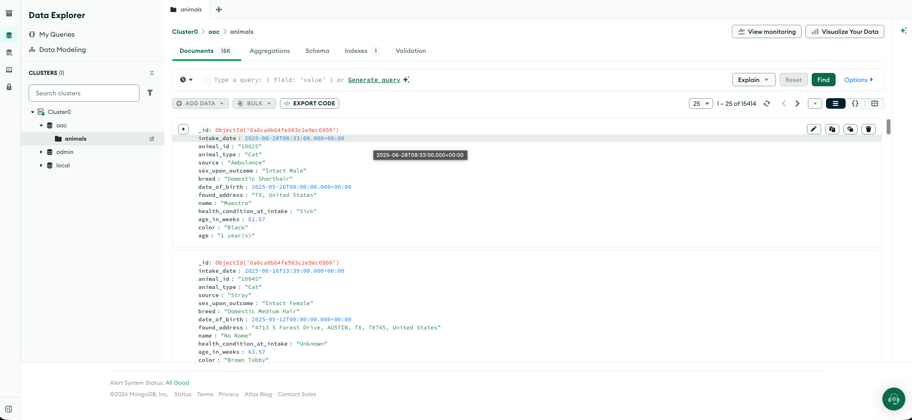

CS-499 Capstone - Enhancement Narrative
Grazioso Salvare - Animal Shelter Dashboard

The artifact I am working on for database enhancement is the Company Data Dashboard for Grazioso Salvare. It is the same artifact used for the software design and engineering enhancement. The dashboard allows staff to easily filter through data from the Austin Animal Center to identify dogs that match certain criteria for their programs. It uses Dash for the front end and Flask for the backend, communicating via HTTP requests. I am using MongoDB Atlas to store my data. It was originally created in CS-340 Client/Server Development and was first completed on 2/17/26. The enhanced version was completed in CS-499 Computer Science Capstone on 7/16/26.
I wanted to include this artifact in my ePortfolio for a plethora of reasons, many of
which were covered in the milestone two narrative. When I first made this application, it
showed me how databases are built and how applications use them. Improving it would allow
me to cover both the software design and engineering as well as the database categories
in one artifact that I would enjoy working on. The database category is the most
important for my career interests. Being able to take in real-world data, sort it, and
display it in a working application is a useful skill in the data field. It shows
end-to-end thinking as well as various data skills such as analytical thinking, data
literacy, handling data flow, and managing databases (ETL) that I wanted to highlight.
Many components I added showcase these skills, including the data.ipynb
file, the Atlas database (Atlas user, etc.), and the CRUD file. MongoDB Atlas is one of
the most important, as it is a tool (or similar) that I may use in the near future.
This enhancement builds upon what I did in the software design/engineering enhancement. I wiped my fake data from my Mongo database, loaded the Austin Animal Center API data into a pandas dataframe, cleaned it, and then loaded it into the Mongo database. I also made other small changes such as removing the Leaflet map and making the address links to Google Maps (see reflection section). Performing these changes makes the dashboard real and usable in the real world.
I developed a security mindset by adding a few features. I first added a database user for the
dashboard to apply the principle of least privilege. There is no reason the dashboard
should have all admin rights to the database. I configured it in Atlas to make the user
only have read/write or admin access for the animals collection. I also used
quote_plus to query Google Maps to help protect from API data being injected
or the URL being changed. By using the RESCUE_QUERIES dict for the dog
filters, NoSQL injections are prevented. I employed strategies for collaborative
environments and to support decision-making by completing this application. And, I
demonstrated the ability to use techniques, skills, and tools to deliver value and
accomplish goals. I met these two outcomes by making my code modular and well documented,
which allows future developers to build upon it. The CRUD layer lets a technical
stakeholder change the rescue criteria in a central location. Now that the dashboard uses
real data from the animal shelter, a real dog rescue company could use this dashboard. It
reduces the time needed to sort through the shelter's database to find matches for their
programs. The filters can easily be changed to match whatever any dog rescue company is
looking for.
To view the changes I made in this enhancement, visit my GitHub repository commit page. Completing the work I had planned and started in the first enhancement was very enjoyable. I learned a lot from this enhancement and was able to leverage a lot of the skills I have built. I already had the database set up and connected to the application, but I had it loaded with fake data. The first thing I did was load the API data into a pandas dataframe to clean and process it. I did this for a few reasons; first, I originally had in mind to use aggregation pipelines to sort and filter the data but decided against this due to the size and formatting of the data. The animal shelter only had around 15,000 rows, some of which were duplicate animals. The API data also had a different schema than what was originally used for the dashboard, so I had to make some changes. And the Dash application uses a dataframe, so it allowed me to easily view how the data will look.
I originally wanted to add an index to the database too but decided it was also unnecessary. The most time-consuming part of loading the dashboard is the initial load with no filter. It loads all 15k entries into the Dash dataframe. For the scope of the application, this is fine because the load speed is hardly noticeable, and the filters load significantly faster once the data is loaded into the dataframe. To improve the speed of the dashboard, we could add an index for the dog filters, sort and filter the data before loading it into the database so unnecessary data wouldn’t be added in the first place, or we could configure the API and CRUD module for performance.
One of the first things I noticed was that the API data did not have coordinates and only
had an address. This presented an issue because the Leaflet map relied on coordinate
data. I tried to convert the addresses into coordinates but quickly learned that much of
the data has incomplete addresses or none at all. A simpler and more efficient solution I
came up with was to add a link to Google Maps. Instead of a prebuilt map, a user can
simply click on the address and load Google Maps in a new tab. The incomplete addresses
can still be loaded, and Google Maps will show a general area, further improving
usability. Users can save addresses, look in the surrounding area, or get directions
easier. There were many similar data formatting issues that I had to take care of. The
API data had many columns that were redundant. To make the dashboard easy to read, I
combined many of these columns. There were also other columns such as
age_in_weeks and sex_upon_outcome that I needed to create. Many
of the columns had null values such as the name, sex, or age columns. To improve the user
experience, I filled these values with strings such as “No name” or “unknown” instead of
null or nan. Due to my experience in data analytics, formatting and filtering the data in
a way the dashboard could use was time-consuming but straightforward. I soon realized
that mixing date and string data worked for formatting but was not working well with the
rest of the application. I made some changes to store the dates as BSON dates and moved
converting nulls to strings in the Dash application. I also added a
$jsonSchema validator to ensure all fields are the correct datatype.
After formatting and cleaning the data, I ran into a problem. The way my CRUD module was
set up, I had no way to load all the data at once. I had to create a new method in my
CRUD module named “load_database” that uses PyMongo’s
insert_many function. I set it up so that when the data is loaded, the
database is first deleted to prevent duplicates. The deletion and loading of the database
also has no safety net. If the API fails, the database will be empty because I did not
create a backup. For the scope of this application, this is fine. The data is not being
loaded automatically. To make the dashboard even more robust, we could add a way for the
data to be loaded weekly or even daily. We could also add a safety net for deleting and
loading the database.
The original database user for the application was set to read-only, which prevented me from loading the data. I had to go to Atlas to configure the user to be read and write so I could load the data from this application. To apply the JSON schema, I configured the user to have that specific privilege as well. With that method and the database user in place, I was able to load the API data into my Mongo database without any problems. I then made various changes to the dashboard such as removing the Leaflet map, removing the radio buttons, and reordering the columns. I also ordered the animals by intake date so the newest animals will be shown first. While making changes to the artifact, I received feedback on how to improve it. The first bit of feedback in the software design category was to add a visual way to see the changes made. At this point of working on the project, I had included the GitHub commits page in my narratives.